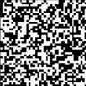
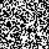
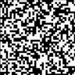

兰顿认为，生命的本质不在具体的物质，而在物质的组织形式。这种组织原则完全可以用算法或程序的形式表达出来。所以，只要能将物质按照正确的形式构筑起来，那么这个新的系统就可以表现出生命。
“生命系统的演化过程，是一个可以从任何特殊媒介物中抽象出来的过程”（约翰·冯·诺伊曼）。
人工生命算法包括进化计算、进化算法（EA）、遗传算法（GA）、遗传编程（GP）、群体智能（SI）、蚁群优化（ACO）、人工化学（AC）、智能体基模型和细胞自动机（CA）。
细胞自动机（英语：Cellular automaton），又称格状自动机、元胞自动机，是一种离散模型，在可计算性理论、数学及理论生物学都有相关研究。它是由无限个有规律、坚硬的方格组成，每格均处于一种有限状态。整个格网可以是任何有限维的。同时也是离散的。每格于t时的态由t-1时的一集有限格（这集叫那格的邻域）的态决定。每一格的“邻居”都是已被固定的。（一格可以是自己的邻居。）每次演进时，每格均遵从同一规矩一齐演进。
就形式而言，细胞自动机有三个特征：
- 平行计算（parallel computation）：每一个细胞个体都同时同步的改变
- 局部的（local）：细胞的状态变化只受周遭细胞的影响。
- 一致性的（homogeneous）：所有细胞均受同样的规则所支配
史蒂芬·沃尔夫勒姆（Stephen Wolfram）对初等元胞机256种规则所产生的模型进行了深入研究，并用熵来描述其演化行为，将细胞自动机分为平稳型、周期型、混沌型和复杂型。

平稳型

周期型

混沌型

复杂型